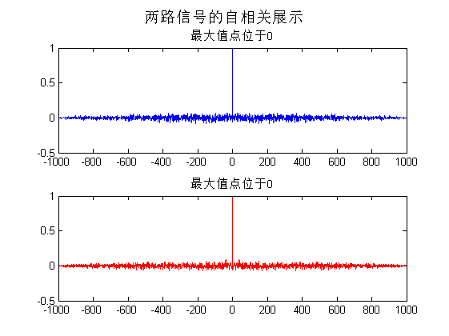
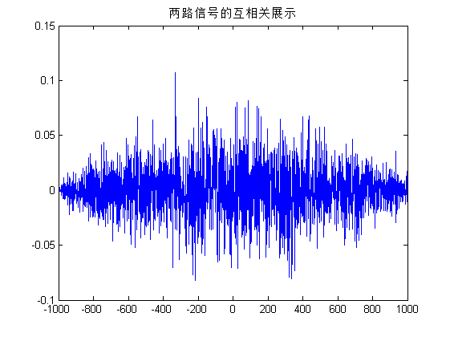

实验 I 之4 相关函数估计计算机仿真
Contents
实验 I 之4 相关函数估计计算机仿真
%相关函数估计,参照赵书P91例2.6-1 %2016.10.31
准备环境
clear all close all % clf clc
生成单路信号1
num =1000; s1 = randn(1,num);
生成单路信号2
s2 = randn(1,num);
估计自相关函数
[x1,lags]=xcorr(s1,'coeff'); [x2,lags]=xcorr(s2,'coeff');
估计互相关函数
[x12,lags]=xcorr(s1,s2,'coeff');
画出自相关函数
画出自相关
subplot(2,1,1);plot(lags,x1); [~,indx]=max(x1); title(['最大值点位于',num2str(abs(indx-num))]); hold on subplot(2,1,2);plot(lags,x2,'r'); [mx,indx]=max(x2); title(['最大值点位于',num2str(abs(indx-num))]); suptitle('两路信号的自相关展示')
画出互相关函数
画出互相关
figure;plot(lags,x12)
title(['两路信号的互相关展示'])
